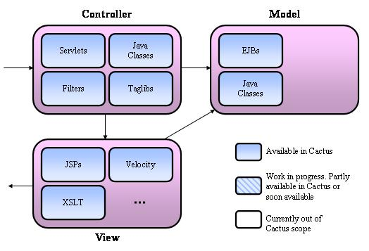

|
Last update : August 31 2002
Doc for : v1.4.1
About
What is Cactus ?
News
Changes
Features/Status
Goals
Roadmap/Todo
Contributors
Contributing
Cactus Users
Tested on ...
License
Downloads
Downloads
Documentation
How it works ?
Getting Started
Mock vs Container
Javadocs
FAQ
Howto Guides
Classpath Howto
Config Howto
Migration Howto
TestCase Howto
Jsp Howto
Runner Howto
Security Howto
Ant Howto
HttpUnit Howto
Sample Howto
EJB Howto
IDE Howto
Tomcat Howto
JUnitEE Howto
Support
Bug database
Mailing list
Misc.
Why the name ?
Logo Challenge
Resources
Test Coverage
Stats
Developers
CVS
Coding Conventions
Build results
Release Checklist
|
| Current scope and status of Cactus |

 |
Support for testing the View layer is done through integration
with HttpUnit.
This is functional unit testing (see the
What is Cactus page, for
a description of the different kinds of unit tests).
|
|
EJB unit testing is done by calling the EJB to unit test as you
would if you were writing code to call an EJB from a servlet (See
the EJB Howto page for more details).
|
|
| General design features |
-
Cactus gives you a very good confidence that your code is going
to run fine on the server it will be deployed on (thanks to Cactus
in-container approach that executes the test inside the
container),
-
Cactus let you test container interactions. This is essential
in a world where containers are providing more and more
features for their components every day,
-
Cactus let you test and automate the deployment process to your
server (using prebuilt powerful custom Ant task),
-
Cactus does not mandate any change to your classes to test, although
it helps think about writing better code and do some refactoring,
-
Cactus provides a good middle ground in term of test granularity :
too fine-grained tests are hard to write (like mock objects tests
that completely simulates the domain objects and focus exclusively
on unit testing your logic code) and need complementary tests. Too
coarse-grained tests (like functional tests) are not enough to
easily uncover bugs and work in a iterative development process
where tests are run very often to ensure everything is working. We
believe Cactus provides a good compromise.
|
| Detailed feature list |
-
Integrates seamlessly with the JUnit testing framework. Any tool
that works with JUnit will work with Cactus because a Cactus test
is a JUnit test ! See
TestCase Howto
tutorial for details.
-
Provides a
ServletTestCase class that your test case
must extends for unit testing Servlets or any java classes that
make use of Servlet API objects.
-
Provides a
JspTestCase class that your test case
must extends for unit testing Taglibs or any java classes that
make use of JSP API objects.
-
Provides a
FilterTestCase class that your test case
must extends for unit testing Filters or any java classes that
make use of Filter API objects.
-
Ability to unit test EJBs (including local interfaces) by calling
them from a
ServletTestCase class (see the
EJB Howto).
-
Extends JUnit by defining two additional (and optional) methods
that can be implemented for each test case (i.e. for each
testXXX() method) : beginXXX() and
endXXX(). See the
TestCase Howto tutorial
for details.
-
It is possible to set up the following in
beginXXX() :
-
HTTP cookies,
-
HTTP parameters (GET and POST),
-
HTTP Headers,
-
Whether an HTTP Session will be created or not on the server side,
-
BASIC Authentication parameters,
-
Send any data as POST data
-
It is possible to verify the following in
beginXXX() :
-
Returned data (as String or using
HttpUnit),
-
Returned cookies,
-
Returned HTTP headers,
-
Returned response code
-
Predefined Ant build scripts that demonstrate how to automate Cactus
unit tests (automatically starting your servlet engine, running the
tests and stopping your server). There are scripts provided for the
following Servlet engines (but it is easy to add new engines and some
Cactus users have already posted scripts on the
Cactus mailing list for other
containers) :
-
Tomcat 3.x (Servlet API 2.2)
-
Tomcat 4.x (Servlet API 2.2 and 2.3)
-
Resin 1.2 (Servlet API 2.2)
-
Resin 1.3 (Servlet API 2.3)
-
Resin 2.x (Servlet API 2.2 and 2.3)
-
WebLogic 5.1 (Servlet API 2.2)
-
WebLogic 6.1 (Servlet API 2.2 and 2.3)
-
WebLogic 7.0 (Servlet API 2.2 and 2.3)
-
Orion 1.4 (Servlet API 2.2 and 2.3)
-
Orion 1.5 (Servlet API 2.2 and 2.3)
-
Orion 1.6 (Servlet API 2.2 and 2.3)
-
Enhydra 3.1 (Servlet API 2.2)
-
Handles
setUp() and tearDown() methods
which work the same as for JUnit except that they are run on the
server side before and after calling each testXXX()
method
-
Tested with all versions of JUnit up to the current one in JUnit CVS.
-
Support for Servlet API 2.2 and 2.3 (Support for Servlet API 2.1 is
no longer provided)
-
Works with JDK 1.2, 1.3 and 1.4.
-
Wraps some of the standard API objects in order to provide
additional methods to help write unit tests.
See the TestCase
Howto tutorial for details.
-
Internal logging using Jakarta Commons Logging facade framework
to help debug problems.
-
HttpUnit integration. See the
HttpUnit Howto) tutorial
for details. This enables
Cactus to provide strong and integrated functional
unit testing features.
-
Uses Jakarta Commons
HttpClient
for HTTP connections.
-
Support for BASIC authentication. You can test code that uses the
Servlet security API (see the
Security Howto).
-
Ability to specify, per test case, what redirector to use. Useful,
for example, when you want to test some code that is using the
Servlet Security API at the same time as other code that should not
be protected.
|
|
|